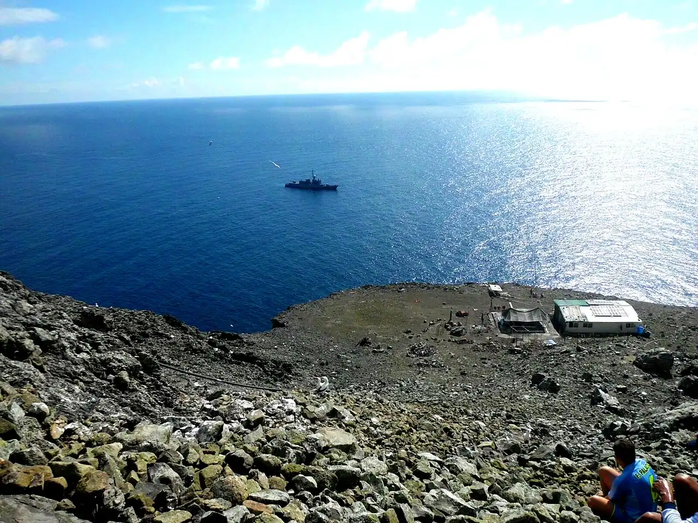

Malpelo
Valle del Cauca, Colombie · plongée

Rocher isolé à environ 500 km des côtes colombiennes, sanctuaire de faune et de flore inscrit au patrimoine mondial. Réputé pour ses grands bancs de requins-marteaux et de requins soyeux, il ne se visite qu’en croisière de plongée.
- Lieu
- Valle del Cauca, Colombie
- Niveau
- Expert
- Activités
- plongée
- Type d'eau
- Mer / océan
- Coordonnées
- 4.00, -81.61 (position approximative du secteur)
Dangers à connaître
- Courants forts et thermoclines froides en profondeur.
- Isolement total : aucune évacuation rapide ni caisson hyperbare à proximité.
Le conseil d'Ocean Buddy
Réservé aux plongeurs très expérimentés : croisière de plusieurs jours, plongées profondes et en courant, loin de tout secours.
Ouvrir dans Ocean Buddy Télécharger sur l'App Store
Source : Fiche Ocean Buddy · septembre 2026 · à vérifier localement.